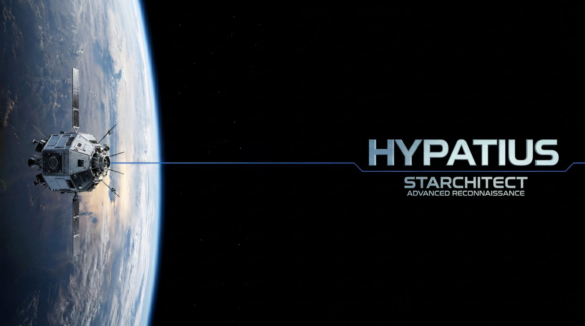

The operating system for space wargaming and BMC3I
Space wargaming and BMC3I simulation built for the next decade of contested orbital operations. High-fidelity orbital mechanics (Orekit) and distributed adversarial AI turn raw space data into repeatable, defensible courses of action.
Over 870,000 lines of orbital simulation, instrumented for battle management, command, control, communications, and intelligence. Every number traces to a physics-engine output — and every AI-assisted run to a reviewable record.
Multi-actor scenarios with adversarial AI, stochastic event modeling, and human-in-the-loop branches for defensible course-of-action validation.
Native interfaces to the battle-management and command-and-control architecture, with standards-aligned data formats and decision-loop outputs scored against measures (MOMs/MOEs/MOPs).
AI-assisted analysis ships with a complete, reviewable record of every run — inputs, tools called, outputs. No guessing what the AI did; the record is the audit trail.